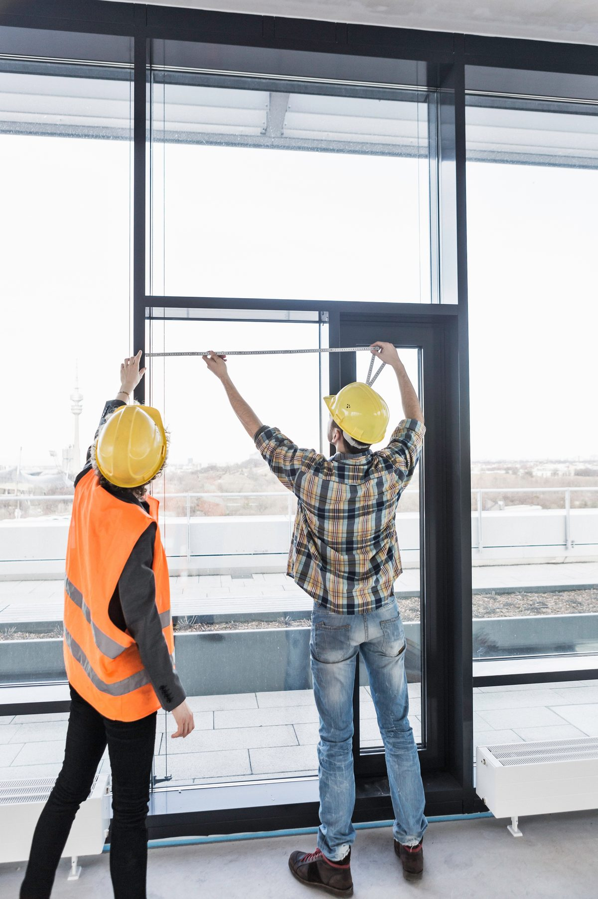

Ferestre & uși PVC
Ferestre PVC, uși PVC și reparații în Constanța.
Suntem o echipă de profesioniști dedicați meseriei, orientată către lucrări bine executate, consultanță corectă și rezultate durabile.
Folosim profile Salamander Blue Evolution 72, 82 și 92, alese în funcție de cerințele fiecărui proiect.
- Constanța & județ
- Intervenții rapide
- Soluții durabile
- Consultanță gratuită

- Constanța & județ
- Intervenții rapide
- Soluții durabile
- Consultanță gratuită
Produsele noastre
De ce noi
Execuție ordonată și comunicare clară
Răspuns rapid
Programăm rapid măsurătorile și trimitem oferta fără întârzieri.
Soluții potrivite
Recomandări tehnice corecte pentru fiecare spațiu.
Execuție curată
Montaj atent, protecție a zonei de lucru și finisaje curate.
Materiale de calitate
Lucrăm cu profile și accesorii testate, durabile.
Portofoliu
Lucrări recente realizate cu atenție la detalii
- 01 Ferestre
- 02 Plase
- 03 Uși PVC
- 04 Plase împotriva insectelor
.jpeg)
.jpeg)
.jpeg)
.jpeg)
.jpeg)
.jpeg)
.jpeg)
.jpeg)
Servicii
Serviciile noastre
Ferestre PVC
- Tâmplărie PVC eficientă energetic
- Consultanță pentru alegerea profilelor
Uși PVC
- Montaj profesional uși PVC
- Etanșare și reglaje pentru utilizare zilnică
Reparații ferestre și uși PVC
- Reglare, înlocuire feronerie și etanșare
- Consultanță și soluții aplicate corect
Plase insecte
- Plase fixe și rulou la comandă
- Montaj curat și consultanță
Uși glisante
- Sisteme glisante pentru terase
- Montaj, reglaje și etanșare
Programează o consultație
- Sună acum: 0725 623 333
- Sau scrie-ne pe WhatsApp
Despre noi
Echipă locală orientată către rezultate durabile
Planificăm fiecare lucrare cu atenție, menținem șantierul curat și livrăm soluții sigure pe termen lung pentru locuințe, terase și spații comerciale.
- 500+Lucrări finalizate
- 10+Ani experiență
- 2hTimp mediu de răspuns
Întrebări
Întrebări frecvente
În cât timp ajungeți pentru măsurători?
În mod normal în aceeași zi sau în maximum 24 de ore în Constanța și județ.
Oferiți consultanță înainte de montaj?
Da. Recomandăm opțiuni tehnice și materiale în funcție de spațiu și buget.
Executați și reparații punctuale?
Da. Realizăm reglaje, etanșări și reparații pentru ferestre și uși existente.
Contact
Spune-ne ce ai nevoie.
Trimite cererea și revenim cu ofertă în cel mai scurt timp.